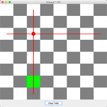

Klausurvorbereitung¶
Alle wesentlichen Konzepte, die wir für die Klausur benötigen, haben wir jetzt in diesem und im vergangenen Semester gelernt. Wir wollen diese Kenntnisse nun durch mehrere Anwendungen vertiefen. Ganz vereinzelt wird dabei auch etwas Neues auftauchen. Dabei handelt es sich aber nicht um ein neues Konzept, sondern bspw. um einen Listener, den wir noch nicht hatten. Solche "Überraschungen" werden Sie aber in der Klausur nicht erleben.
Dieses Kapitel wird hier so aufgebaut sein, dass es immer eine Aufgabe (eine Probeklausur) gibt und die dazugehörige Lösung, die aber "aufgeklappt" werden muss. Sie können ja immer zuerst probieren, die Lösung selbständig zu entwickeln. Wenn Sie am Ende alle Aufgaben selbständig lösen können, sind Sie mit Sicherheit sehr gut auf die Klausur vorbereitet.
Wir beginnen aber noch kurz mit allgemeinen Betrachtungen zum Grundgerüst. Eines der nachfolgend vorgestellten Grundgerüste werden Sie mit Sicherheit bei der Klausur verwenden können.
Mögliche Grundgerüste¶
Wie Sie wissen, ist das Fenster (JFrame) im BorderLayout. Das bedeutet, dass das Fenster in fünf Bereiche (Container) unterteilt ist. Sie müssen sich bei der Konfiguration überlegen,
- ob "gezeichnet" werden soll, d.h. ob das
JPanelimCENTERdes Fensters eine eigene Klasse ist, oder ob es mithilfe einer Methode erzeugt werden kann und - welche der fündf Bereiche Sie benötigen.
Wir erläutern das an Beispielen und beginnen mit einem Grundgerüst, welches wir für das Zeichnen verwenden können, welches also eine Canvas enthält.
1 2 3 4 5 6 7 8 9 10 11 12 13 14 15 16 17 18 19 20 21 22 23 24 25 26 27 28 29 30 31 32 33 34 35 36 37 38 39 40 41 42 43 44 45 46 47 48 49 50 51 52 53 54 55 56 57 58 59 60 61 62 63 64 65 66 67 68 69 70 71 72 73 74 75 | |
In diesem Grundgerüst werden alle fünf Bereiche des Fensters mit JPanel befüllt. Das CENTER wird mit einem Objekt der Klasse Canvas befüllt, welche von JPanel erbt. Diese Klasse wird benötigt, um in die paintComponent()-Methode zu zeichnen. Sollten Sie z.B. kein Panel im EAST- und im WEST-Bereich des Fensters benötigen, dann löschen Sie einfach die Zeilen 23 und 24 sowei die beiden Methoden initEast() und initWest().
Ein Grundgerüst ohne Canvas, also ohne Zeichnen, könnte dann so aussehen:
1 2 3 4 5 6 7 8 9 10 11 12 13 14 15 16 17 18 19 20 21 22 23 24 25 26 27 28 29 30 31 32 33 34 35 36 37 38 39 40 41 42 43 44 45 46 47 48 49 50 51 52 53 54 55 56 57 58 59 60 61 62 63 64 65 66 67 68 69 | |
Beachten Sie, dass JPanel ohne Angabe eines LayoutManagers im FlowLayout sind. Das können Sie ändern und die einzelnen JPanel auch noch weiter verschachteln.
Eines dieser beiden Grundgerüste können wir nun stets verwenden. Es muss dann jeweils "nur" noch angepasst werden. Wir beginnen mal mit einer Aufgabe.
Schachbrett¶
-
Schreiben Sie eine Klasse
Schachbrett, die folgendes Fenster darstellt:
- Es werden 8x8 Rechtecke dargestellt – abwechselnd mit grauem und weißem Hintergrund
- bitte beachten:
- die dargestellten Rechtecke sind gezeichnet, es handelt sich nicht um einzelne JPanels!!! (ist für später wichtig)
- das 8x8-Feld der Rechtecke füllt die Zeichenfläche vollständig, d.h. wenn Sie die Größe des Fensters verändern, passt sich auch das 8x8-Feld entsprechend an
-
Implementieren Sie den
MausListenerso, dass Sie durch Mausklick auf die Zeichenfläche einen ausgefüllten Kreis in das Rechteck malen, in das Sie geklickt haben.
- Die Abbildung zeigt das Schachbrett nach einem Mausklick auf das Rechteck in der 2. Zeile und 4. Spalte.
- Versuchen Sie, die Kreise möglichst zentriert in die Rechtecke zu malen. Eine gute Größe für den Durchmesser der Kreise ist ⅓ der Breite oder Höhe der Rechtecke.
-
Klicken Sie mehrmals mit der Maus, werden entsprechend mehrere Kreise dargestellt.

-
Fügen Sie dem Süden des Fensters ein
JPanelhinzu. DiesesJPanelenthält einenJButton'clear field'. Nach Drücken dieses Buttons werden alle roten Kreise wieder gelöscht.
-
Erweitern Sie Ihre Implementierung nun so, dass durch einen Mausklick nicht nur ein roter Kreis gezeichnet wird, sondern auch noch eine horizontale und eine vertikale Linie in der Zeile und der Spalte, in der der Kreis gezeichnet wird.

- in der Zeile und Spalte des Kreises erscheint jeweils mittig eine rote Linie

- Abbildung zeigt Schachbrett nach mehreren Mausklicks
- Die Linien müssen nicht, wie im Bild dargestellt, in der Mitte der Rechtecke anfangen. Sie können auch komplett durchgezeichnet werden, d.h. vom Beginn bis zum Ende einer Zeile bzw. Spalte.
-
Erweitern Sie Ihre Implementierung nun so, dass es nicht mehr möglich ist, dass 2 Kreise in der gleichen Spalte oder in der gleichen Zeile erscheinen. Wenn Sie ein Rechteck anklicken, in dessen Zeile oder Spalte bereits ein anderer Kreis ist, so soll kein neuer Kreis gezeichnet werden, sondern das Rechteck als grünes Rechteck erscheinen.

- In das grüne Rechteck wurde geklickt - es erscheint kein Kreis, da in der Zeile bereits ein Kreis ist – stattdessen ein grünes Rechteck.

- In das grüne Rechteck wurde geklickt - es erscheint kein Kreis, da in der Zeile bereits ein Kreis ist - stattdessen ein grünes Rechteck.
- Das Rechteck bleibt nur bis zum nächsten Klick markiert (grün).
-
Zusatzaufgabe:: Erweitern Sie die Schritte 5 und 6 auch auf die Diagonalen, d.h. es sollen auch die jeweiligen Diagonalen der Punkte eingezeichnet werden und keine zwei Punkte dürfen in der gleichen Diagonalen liegen.
Lösung Schachbrett
-
Zuerst überlegen wir uns, welches Grundgerüst wir verwenden und wie wir es anpassen. Wir müssen zeichnen*, also das Grundgerüst **mit
Canvas. Von den Nord-, Süd-, Ost-, West-Bereichen benötigen wir nur den Süden (dort kommt der 'clear field'-Button rein). Also ist das unser Ausgangspunkt:1 2 3 4 5 6 7 8 9 10 11 12 13 14 15 16 17 18 19 20 21 22 23 24 25 26 27 28 29 30 31 32 33 34 35 36 37 38 39 40 41 42 43 44 45 46 47 48 49 50
import java.awt.BorderLayout; import java.awt.Graphics; import java.awt.Graphics2D; import javax.swing.JFrame; import javax.swing.JPanel; public class Schachbrett extends JFrame{ Canvas canvas; public Schachbrett() { super(); this.setTitle("Schachbrett"); this.setDefaultCloseOperation(JFrame.EXIT_ON_CLOSE); this.canvas = new Canvas(); this.getContentPane().add(this.canvas, BorderLayout.CENTER); // NORTH, EAST, WEST geloescht this.getContentPane().add(this.initSouth(), BorderLayout.SOUTH); this.setSize(400, 300); this.setLocation(300,200); this.setVisible(true); } private class Canvas extends JPanel { @Override protected void paintComponent(Graphics g) { super.paintComponent(g); // Implementierung von JPanel aufrufen Graphics2D g2 = (Graphics2D)g; // Methoden von Graphics2D nutzbar // hier koennen wir zeichnen } } private JPanel initSouth() { JPanel south = new JPanel(); // hier das JPanel fuer SOUTH befuellen return south; } public static void main(String[] args) { new Schachbrett(); } }Von den
initXXX()-Methoden benötigen wir auch nur nochinitSouth(). Die anderen drei sind deshalb gelöscht. -
Jetzt können wir mit dem Zeichnen des Schachbretts beginnen. Dazu könnten wir "einfach" 64 gleich große Rechtecke in die
Canvaszeichnen. Wir sollten hier aber unbedingt dafür ein Model, d.h. eine Datenstruktur erstellen und diese dann in der View darstellen. Für eine solche Datenstruktur (für ein Model) gibt es drei Gründe:- wir wollen später erkennen, in welches Feld geklickt wurde und
- wir wollen erkennen können, in welches Feld bereits geklickt wurde und
- wir wollen erkennen können, welche Felder Nachbarfelder sind.
Da die Dimensionen hier fest sind (8x8), kann man das in einem (zweidimensionalen) Array erledigen. Als Typ jedes einzelnen Elementes sollte
booleangenügen - markiert oder nicht markiert. Wenn Sie sich nicht sicher sind, ob zwei Zustände genügen, können Sie auch eineenumals Typ verwenden. Wir machen das mal, dann bleibt die Lösung flexibler und wir übenenumnochmal.1 2 3 4 5 6 7 8 9 10 11 12 13 14 15 16 17 18 19 20 21 22 23 24 25 26 27 28 29 30 31 32 33 34 35 36 37 38 39 40 41 42 43 44 45 46 47 48 49 50 51 52 53 54 55 56 57 58 59 60 61 62 63 64 65 66
import java.awt.BorderLayout; import java.awt.Graphics; import java.awt.Graphics2D; import javax.swing.JFrame; import javax.swing.JPanel; public class Schachbrett extends JFrame{ Canvas canvas; enum State { MARKIERT, UNMARKIERT }; State[][] field; public Schachbrett() { super(); this.setTitle("Schachbrett"); this.setDefaultCloseOperation(JFrame.EXIT_ON_CLOSE); this.initField(); this.canvas = new Canvas(); this.getContentPane().add(this.canvas, BorderLayout.CENTER); // NORTH, EAST, WEST geloescht this.getContentPane().add(this.initSouth(), BorderLayout.SOUTH); this.setSize(400, 300); this.setLocation(300,200); this.setVisible(true); } private void initField() { this.field = new State[8][8]; for(int row=0; row<this.field.length; row++) { for(int col=0; col<this.field[row].length; col++) { this.field[row][col] = State.UNMARKIERT; } } } private class Canvas extends JPanel { @Override protected void paintComponent(Graphics g) { super.paintComponent(g); // Implementierung von JPanel aufrufen Graphics2D g2 = (Graphics2D)g; // Methoden von Graphics2D nutzbar // hier koennen wir zeichnen } } private JPanel initSouth() { JPanel south = new JPanel(); // hier das JPanel fuer SOUTH befuellen return south; } public static void main(String[] args) { new Schachbrett(); } }- Wir hätten das
fieldauch im Konstruktor erzeugen und befüllen können, lagern es aber in eine eigene Methode aus und rufen diese im Konstruktor auf. Alles, was wir funktional in eine eigene Methode auslagern können, sollten wir auch auslagern - liest sich viel besser!
-
Jetzt überlegen wir, wie wir das Schachbrett darstellen (die View). Die Darstellung erfolgt am besten mit der
fillRect()-Methode. Diese erwartet die Koordinaten des linken oberen Punktes und die Breite und die Höhe des Rechtecks. Breite und Höhe ergeben sich aus der Breite und Höhe derCanvas, jeweils geteilt durch8. Aus der Position des zu zeichnenden Rechtecks in einer Zeile ergibt sich dann derx-Wert für den linken oberen Punkt und aus der Position des zu zeichnenden Feldes in der Spalte ergibt sich dery-Wert des linken oberen Punktes. Wir ändern nun nur diepaintComponent()-Methode (die View), da es nur um die Darstellung geht:44 45 46 47 48 49 50 51 52 53 54 55 56 57 58 59 60 61 62 63 64 65 66 67 68 69 70 71 72 73 74 75 76 77
private class Canvas extends JPanel { @Override protected void paintComponent(Graphics g) { super.paintComponent(g); // Implementierung von JPanel aufrufen Graphics2D g2 = (Graphics2D)g; // Methoden von Graphics2D nutzbar int canvasHeight = this.getHeight(); int canvasWidth = this.getWidth(); int heightRect = canvasHeight / 8; int widthRect = canvasWidth / 8; boolean grey = true; for(int row=0; row<Schachbrett.this.field.length; row++) { int y = row * heightRect; // y-Wert des linken oberen Punktes grey = !grey; // mit gleichen Farbe anfangen, wie aufgehoert for(int col=0; col<Schachbrett.this.field[row].length; col++) { int x = col * widthRect; // x-Wert des linken oberen Punktes if(grey) { g2.setColor(Color.LIGHT_GRAY); grey = false; } else { g2.setColor(Color.WHITE); grey = true; } g2.fillRect(x, y, widthRect, heightRect); } } } }- Wir laufen also durch das
field-Array und ermitteln für die aktuelle Zeile deny-Wert und für die jeweils aktuelle Spalte denx-Wert.- Damit wir immer zwischen Grau und Weiß umschalten, erstellen wir uns eine boole'sche Variable
grey, die abwechselndtrueundfalsewird, je nachdem, ob wir als nächstes ein graues oder ein weißes Feld zeichnen wollen. - Nach jeder Zeile ändert sich die Farbe jedoch nicht (wir fangen in der neuen Zeile mit der gleichen Farbe an, wie wir in der alten Zeile aufgehört haben). Deshalb mussten wir noch die Anweisung in Zeile
61hinzufügen. - Das Schachbrett wird nun so gezeichnet, wie wir das wollten. Wenn das Fenster vergrößert oder verkleinert wird, dann passen sich die Felder entsprechend an, da wir alles abhängig von der Breite und Höhe der Canvas berechnen.
- Wir können aber die Fenstergröße aber gleich etwas quadratischer gestalten (z.B.
this.setSize(400, 400);).
- Damit wir immer zwischen Grau und Weiß umschalten, erstellen wir uns eine boole'sche Variable
- Wir laufen also durch das
-
jetzt kümmern wir uns um die roten Punkte inmitten des Rechtecks, falls wir mit der Maus darauf geklickt haben. Dazu benötigen wir den
MouseListener, denn es geht um einen Mausklick (also entwedermouseClicked()odermousePressed()) und nicht um eine Bewegung der Maus. Wir entscheiden uns fürmouseClicked()- das ist nun also unser * Controller*. Wir implementieren zunächst denMouseListenerund prüfen, ob damit alles funktioniert (ob wir z.B. nicht vergessen haben, an denMouseListeneranzumelden.)1 2 3 4 5 6 7 8 9 10 11 12 13 14 15 16 17 18 19 20 21 22 23 24 25 26 27 28 29 30 31 32 33 34 35 36 37 38 39 40 41 42 43 44 45 46 47 48 49 50 51 52 53 54 55 56 57 58 59 60 61 62 63 64 65 66 67 68 69 70 71 72 73 74 75 76 77 78 79 80 81 82 83 84 85 86 87 88 89 90 91 92 93 94 95 96 97 98 99 100 101 102 103 104 105 106
import java.awt.BorderLayout; import java.awt.Color; import java.awt.Graphics; import java.awt.Graphics2D; import java.awt.event.MouseEvent; import java.awt.event.MouseListener; import javax.swing.JFrame; import javax.swing.JPanel; public class Schachbrett extends JFrame implements MouseListener{ Canvas canvas; enum State { MARKIERT, UNMARKIERT }; State[][] field; public Schachbrett() { super(); this.setTitle("Schachbrett"); this.setDefaultCloseOperation(JFrame.EXIT_ON_CLOSE); this.initField(); this.canvas = new Canvas(); this.canvas.addMouseListener(this); this.getContentPane().add(this.canvas, BorderLayout.CENTER); // NORTH, EAST, WEST geloescht this.getContentPane().add(this.initSouth(), BorderLayout.SOUTH); this.setSize(400, 400); this.setLocation(300,200); this.setVisible(true); } private void initField() { this.field = new State[8][8]; for(int row=0; row<this.field.length; row++) { for(int col=0; col<this.field[row].length; col++) { this.field[row][col] = State.UNMARKIERT; } } } private class Canvas extends JPanel { @Override protected void paintComponent(Graphics g) { super.paintComponent(g); // Implementierung von JPanel aufrufen Graphics2D g2 = (Graphics2D)g; // Methoden von Graphics2D nutzbar int canvasHeight = this.getHeight(); int canvasWidth = this.getWidth(); int heightRect = canvasHeight / 8; int widthRect = canvasWidth / 8; boolean grey = true; for(int row=0; row<Schachbrett.this.field.length; row++) { int y = row * heightRect; // y-Wert des linken oberen Punktes grey = !grey; // mit einer anderen Farbe anfangen, als aufgehoert for(int col=0; col<Schachbrett.this.field[row].length; col++) { int x = col * widthRect; // x-Wert des linken oberen Punktes if(grey) { g2.setColor(Color.LIGHT_GRAY); grey = false; } else { g2.setColor(Color.WHITE); grey = true; } g2.fillRect(x, y, widthRect, heightRect); } } } } private JPanel initSouth() { JPanel south = new JPanel(); // hier das JPanel fuer SOUTH befuellen return south; } public static void main(String[] args) { new Schachbrett(); } @Override public void mouseClicked(MouseEvent e) { int x = e.getX(); int y = e.getY(); System.out.println("mouseClicked: [x=" + x + ", " + y + "]"); } @Override public void mousePressed(MouseEvent e) {} @Override public void mouseReleased(MouseEvent e) {} @Override public void mouseEntered(MouseEvent e) {} @Override public void mouseExited(MouseEvent e) {} }- Wir fügen das
implements MouseListenerim Klassenkopf ein und importieren denMouseListeneraus demjava.awt.event-Paket (lassen wir natürlich Eclipse erledigen).- Wir lassen Eclipse durch
Add unimplemented methodsdie Methoden aus demMouseListenerhinzufügen. Dabei wird auchMouseEventimportiert. - Da wir uns für die Implementierung von
mouseClicked()entschieden haben, können wir die anderen Methoden ein wenig verkleinern, um Übersicht zu bewahren. - In
mouseClicked()können wir schonmal die Koordinaten desMouseEventabfragen und eine Ausgabe auf die Konsole durchführen, um zu kontrollieren, ob alles funktioniert. - Unbedingt müssen wir natürlich
canvasan denMouseListeneranmelden (Zeile25). mouseClicked()wird aufgerufen, wenn wir in das Feld klicken - die Koordinaten des Klicks in dieCanvaswerden auf der Konsole ausgegeben.
- Wir lassen Eclipse durch
- Wir fügen das
-
Nun müssten wir uns überlegen, auf welches Rechteck aus dem
field-Array wir durch die Mausklick geklickt haben. Dieses Rechteck wollen wir alsMARKIERTspeichern.